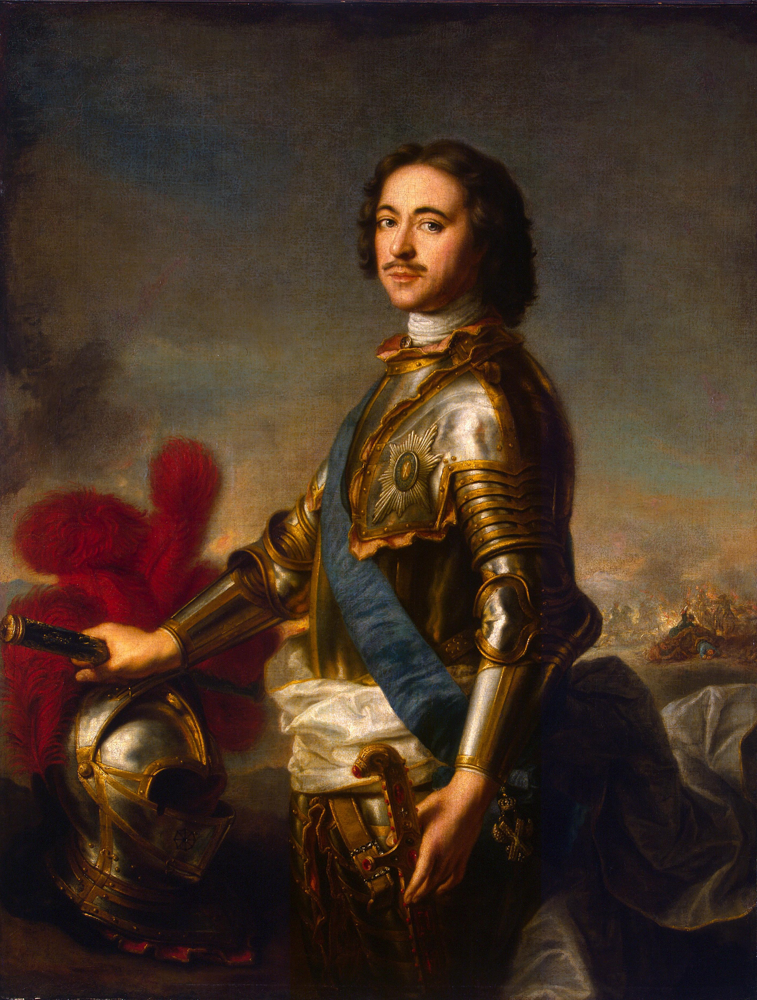

1. Προοίμιο: Η Φλεγόμενη Ανατολική Ασία — Από την Ταϊβάν στις Ζούγκλες του Βιετνάμ
Πριν περάσουμε στην αχανή επικράτεια της Ρωσίας, οφείλουμε να κλείσουμε τον μεγάλο κύκλο της Ανατολικής και Νοτιοανατολικής Ασίας που αφήσαμε ανοιχτό στο προηγούμενο μάθημα. Γιατί εκεί, αμέσως μετά το 1945, ο Ψυχρός Πόλεμος δεν έμεινε καθόλου «ψυχρός» —έγινε καυτός, αιματηρός και ανελέητος.
Ταϊβάν (Φορμόζα): Το «Φλικταινίδιο» του Πλανήτη
Όταν το 1949 οι κομμουνιστές του Μάο νίκησαν στον κινεζικό εμφύλιο, οι ηττημένοι εθνικιστές του Τσανγκ Κάι Σεκ —όσοι επέζησαν— κατέφυγαν στο μεγάλο νησί της Ταϊβάν (ή Φορμόζα, την «Εθνικιστική Κίνα»). Μέχρι πρόσφατα, όλα τα αντικείμενα της καθημερινότητάς μας έγραφαν από κάτω Made in Taiwan, πριν ανέβει η μεγάλη Κίνα και γράφουν πλέον όλα Made in China!
- Η γεωπολιτική παγίδα: Η Ταϊβάν εξελίχθηκε σε δυτικού τύπου δημοκρατία, αλλά το Πεκίνο δεν την αναγνώρισε ποτέ· τη θεωρεί επαρχία του που πρέπει να ενωθεί με τη μητέρα Κίνα. Κάθε τόσο, κινεζικά αεροπλάνα και πλοία παραβιάζουν «εντελώς τυχαία» τον χώρο της Ταϊβάν για να της θυμίζουν ποιος είναι το αφεντικό. Επειδή όμως οι ΗΠΑ έχουν εγγυηθεί εξαρχής την ασφάλεια του νησιού, η Ταϊβάν παραμένει ένα από τα πιο επικίνδυνα «φλικταινίδια» της ανθρωπότητας: αν γίνει επέμβαση, δεν θα πολεμήσει η Ταϊβάν με την Κίνα, αλλά οι ΗΠΑ με την Κίνα —δηλαδή, θα καεί το πελεκούδι!
Το Τέλος της Αποικιοκρατίας & η Γαλλία του Βισί
Ο Β΄ Παγκόσμιος Πόλεμος υπήρξε η ταφόπλακα της ευρωπαϊκής αποικιοκρατίας στην Ασία. Οι ΗΠΑ, που πολέμησαν μόνες τους την Ιαπωνία στον Ειρηνικό (1941–1945), είχαν την αίσθηση ότι εκείνες απελευθέρωσαν την Ασία («αν δεν ήμασταν εμείς, ακόμη θα είχατε τους Γιαπωνέζους στον σβέρκο σας!»). Το 1946 οι Αμερικανοί αποχώρησαν ειρηνικά από τις Φιλιππίνες, ενώ το 1949 υποχρέωσαν τους Ολλανδούς —απειλώντας τους ότι θα κόψουν τα κονδύλια ανασυγκρότησης της Ευρώπης— να μαζέψουν τα μπογαλάκια τους και να φύγουν από την Ινδονησία.
Στην Ινδοκίνα όμως (Βιετνάμ, Λάος, Καμπότζη), η ιστορία εξελίχθηκε σε τραγωδία. Κατά τον Β΄ Παγκόσμιο Πόλεμο, η Γαλλία κατέρρευσε ταχύτατα και η μισή χώρα —με πρωτεύουσα το Βισί υπό τον ήρωα του Α΄ Παγκοσμίου Πολέμου στρατηγό Πεταίν— συνεργάστηκε επίσημα με το Γ΄ Ράιχ! (Παρένθεση: υπάρχει και γνωστή μάρκα καλλυντικών που λέγεται Vichy· εγώ, μόνο που ακούω αυτό το όνομα, δεν θα αγόραζα ποτέ ούτε ένα προϊόν! Αλλά εντάξει, εγώ είμαι πανέμορφη και δεν χρειάζομαι εξάλλου τίποτα —για καθαρά επιστημονικούς λόγους σας το εξηγώ!). Επειδή λοιπόν η Γαλλία του Βισί ήταν σύμμαχος του Άξονα, οι Ιάπωνες μπήκαν στην γαλλική Ινδοκίνα ως «σύμμαχοι»!
«Χο Τσι Μινχ, αναπνέεις με καλάμι» & το Ντιεν Μπιεν Φου (1954)
Απέναντι στους Ιάπωνες —και μετά το 1945 απέναντι στους Γάλλους που επέστρεψαν αποφασισμένοι να κρατήσουν την αποικία τους— υψώθηκε η θρυλική αντίσταση των Βιετμίνχ (και αργότερα Βιετκόνγκ), υπό τον χαρισματικό κομμουνιστή ηγέτη Χο Τσι Μινχ.
- Ο πόλεμος της λάσπης: Το Βιετνάμ είναι μια χώρα του νερού, των μουσώνων, του ποταμού Μεκόνγκ, με πυκνές ζούγκλες, δηλητηριώδη ερπετά και κινούμενη λάσπη. Οι Βιετναμέζοι αντάρτες χώνονταν κάτω από την επιφάνεια των βάλτων και ανέπνεαν κρατώντας ένα καλάμι! Βλέπεις πέντε, δέκα, δεκαπέντε καλάμια να κινούνται στο έλος, κι από κάτω είναι ένας ολόκληρος λόχος που ξαφνικά αναδύεται, χτυπά και εξαφανίζεται —ακριβώς όπως το τραγούδησε η γενιά μας με τον Διονύση Σαββόπουλο: «Χο Τσι Μινχ, αναπνέεις με καλάμι!».
- Ντιεν Μπιεν Φου & το γαλλικό ήθος: Το 1954, στο Ντιεν Μπιεν Φου, οι Βιετμίνχ άφησαν τον ανταρτοπόλεμο, παρέταξαν τακτικό στρατό στα «μαρμαρένια αλώνια» και συνέτριψαν τους Γάλλους! Η Γαλλία ταπεινώθηκε, αλλά έδειξε γιατί παραμένει μεγάλο έθνος: όταν επέστρεψε ο ηττημένος Γάλλος αρχιστράτηγος, όλη η Γαλλία τον τίμησε με ενός λεπτού σιγή, διότι δεν είχε κάνει καμία απολύτως κίνηση για να προστατεύσει τον μάχιμο γιο του, ο οποίος πολέμησε στην πρώτη γραμμή και έπεσε νεκρός στο Ντιεν Μπιεν Φου, επιστρέφοντας στο Παρίσι μέσα σε φέρετρο μαζί με τους απλούς στρατιώτες!
Η Αμερικανική Ήττα, το Agent Orange & ο Πρωταθλητισμός του Βιετνάμ
Φοβούμενες ότι όλη η Ασία θα γίνει κόκκινη, οι ΗΠΑ πήραν τη σκυτάλη. Το 1965 έστειλαν μισό εκατομμύριο στρατιώτες: ήταν όμως 18χρονα και 19χρονα κληρωτά «αμερικανόπουλα», άπειρα, ριγμένα σε μια άγνωστη ζούγκλα απέναντι σε εμπειροπόλεμους μαχητές που είχαν σκάψει χιλιάδες χιλιόμετρα υπόγειων σηράγγων!
- Agent Orange & Νάρκες: Βομβαρδίζοντας στα τυφλά πάνω από την πυκνή ζούγκλα, οι Αμερικανοί ζήτησαν από τους επιστήμονές τους ένα χημικό αποφυλλωτικό: το διαβόητο Agent Orange. Τα δέντρα ξεγυμνώθηκαν, αλλά το χημικό πέρασε με τις βροχές στον υδροφόρο ορίζοντα και στη διατροφική αλυσίδα, καταστρέφοντας το νευρικό σύστημα τόσο των Βιετναμέζων όσο και των Αμερικανών στρατιωτών (μέχρι σήμερα το Βιετνάμ μαστίζεται από τις περισσότερες τερατογενέσεις στον κόσμο, ενώ τα αγροτικά του προϊόντα δύσκολα εξάγονται). Παράλληλα, επειδή οι στρατοί έκαναν παρακάμψεις μέσα από το Λάος και την Καμπότζη, έσπειραν βιαστικά εκατομμύρια αχαρτογράφητες νάρκες —κάνοντας τις δύο αυτές χώρες τις πιο ναρκοθετημένες της γης μέχρι σήμερα.
- Από τα πανεπιστήμια στον Μάη του '68: Επειδή στο Βιετνάμ σκοτώνονταν κληρωτά παιδιά («ο γιος σου, ο ανιψιός σου» —όχι επαγγελματίες μισθοφόροι όπως αργότερα στο Ιράκ) και τα μεταγωγικά επέστρεφαν γεμάτα φέρετρα, η αμερικανική κοινωνία εξεγέρθηκε. Οι φοιτητικές διαδηλώσεις του 1967–1968 στις ΗΠΑ πέρασαν τον Ατλαντικό και γέννησαν τον Μάη του '68 στο Παρίσι! Για δεκαετίες μετά την ταπεινωτική αποχώρηση των ΗΠΑ (1973/1975), κάθε υποψήφιος Αμερικανός πρόεδρος ελεγχόταν για το αν πολέμησε στο Βιετνάμ (γι' αυτό και οι αντίπαλοι του Μπιλ Κλίντον τον χτυπούσαν ως «βουτυρομπεμπέ» που απέφυγε τη στράτευση με μικρά πηδηματάκια).
- Ερυθροί Χμερ & το ακατάβλητο Βιετνάμ: Στην Καμπότζη του βασιλιά Σιχανούκ επικράτησε η παράξενη, παρανοϊκή κομμουνιστική σέκτα των Ερυθρών Χμερ (Khmer Rouge) του Πολ Ποτ, οι οποίοι άδειασαν τις πόλεις, εξόντωσαν γιατρούς, δασκάλους και διανοούμενους και άφησαν πίσω τους 1,5 έως 1,7 εκατομμύριο νεκρούς σε ομαδικούς τάφους κρανίων! Το 1979, το κομμουνιστικό Βιετνάμ εισέβαλε στην Καμπότζη και ανέτρεψε τον Πολ Ποτ, ενώ την ίδια χρονιά νίκησε σε συνοριακό πόλεμο και την κομμουνιστική Κίνα! Μετρήστε: από το 1941 έως το 1980, οι Βιετναμέζοι πολέμησαν διαδοχικά και νίκησαν τους Ιάπωνες, τους Γάλλους, τους Αμερικανούς, τους Καμποτζιανούς και τους Κινέζους! Μιλάμε για παγκόσμιο πρωταθλητισμό στην ιστορία του πολέμου!
2. Η Αχανής Γεωγραφία & ο Ψυχισμός της Ρωσίας
Στο 17ο μάθημα της σειράς, η Μαρία Ευθυμίου ανοίγει το κεφάλαιο της Ρωσίας —μιας χώρας που απλώνεται σε έντεκα ζώνες ώρας και δύο ηπείρους, αιωρούμενη αδιάκοπα ανάμεσα στην Ευρώπη και την Ασία.
Η ρωσική μοίρα καθορίστηκε αμετάκλητα από το ανάγλυφό της: μια ατελείωτη, επίπεδη πεδιάδα χωρίς οροσειρές ή φυσικά εμπόδια. Επί χιλιετίες, η Ρωσία δεχόταν επιδρομές από παντού: από την ανατολική στέπα επέδραμαν οι έφιπποι νομάδες (Ούννοι, Πετσενέγοι, Μογγόλοι), και από τα δυτικά οι ευρωπαϊκοί στρατοί (Πολωνοί, Σουηδοί, Γάλλοι, Γερμανοί).
Το Ρωσικό Κλίμα και το Χιούμορ της Καθηγήτριας: Η Μαρία Ευθυμίου σχολιάζει με χιούμορ τις ελληνικές διαμαρτυρίες για το κρύο: «Όταν ακούω εδώ να λέμε "καλέ, σήμερα κάνει κρύο, έχει 12 βαθμούς!", λέω: θα έρθει ένας Ρώσος να μας δώσει μια ανάποδη! Στη Σιβηρία με -50°C το σάλιο παγώνει κλακ μες στο στόμα πριν προλάβεις να μιλήσεις! Αυτός ο σκληρός χειμώνας ήταν ο απόλυτος σύμμαχος της ρωσικής άμυνας απέναντι σε όλους τους εισβολείς!».
Το Αχανές Χάος & το Ανέκδοτο του Μεγαλογαιοκτήμονα: Οι αποστάσεις υπερβαίνουν κάθε ανθρώπινη εμπειρία: «Πετώντας με Boeing 747 από την άκρη της ανατολικής Ρωσίας κάναμε 12 ολόκληρες ώρες για να φτάσουμε στη Μόσχα —όσο διαρκεί η πτήση Αθήνα-Νέα Υόρκη!». Η απέραντη αυτή κλίμακα αποτυπώνεται στο ανέκδοτο του Έλληνα αγρότη με τον ξένο γαιοκτήμονα: «Ρωτάει ο κυρ-Κίτσος πόσο μεγάλο είναι το κτήμα του: "Εγώ ξυπνάω το πρωί, μπαίνω στο αυτοκίνητο, οδηγώ ασταμάτητα, τρώω το μεσημέρι, οδηγώ όλο το απόγευμα και φτάνω στην άκρη του κτήματος το βράδυ!". Κι ο κυρ-Κίτσος ανακουφισμένος: "Α, κι εγώ είχα κάποτε ένα τέτοιο σαράβαλο αυτοκίνητο!"».
Το Δυνάμει Πλουσιότερο Υπέδαφος της Γης & οι Ζώνες της Φύσης
Ακόμη και μετά το 1989–1990, όταν με την κατάρρευση της Σοβιετικής Ένωσης αποσπάστηκαν 15 ολόκληρες χώρες —από την Εσθονία, τη Λετονία, τη Λιθουανία, τη Λευκορωσία και την Ουκρανία μέχρι τη Γεωργία, την Αρμενία, το Αζερμπαϊτζάν και τους γίγαντες της Κεντρικής Ασίας όπως το Καζακστάν (μία από τις δέκα μεγαλύτερες χώρες του κόσμου!)—, η «κολοβωμένη» Ρωσία παραμένει με διαφορά η μεγαλύτερη χώρα του πλανήτη!
- «Το αέριο στο μπρικάκι μου»: Η Ρωσία είναι δυνάμει η πλουσιότερη χώρα της γης. Δεν υπάρχει στοιχείο της φύσης που να μην κρύβει το υπέδαφός της: χρυσός, ασήμι, διαμάντια, ουράνιο, σίδηρος, ξυλεία, ύδατα, πετρέλαιο όσο θες, και φυσικό αέριο —ακόμη και το αέριο που έχουμε κι ανάβουμε το μπρικάκι μας για τον καφέ, από τη Ρωσία έρχεται! Κι όμως, το μεγαλύτερο προνόμιο της Ρωσίας είναι ταυτόχρονα και το μεγαλύτερο μειονέκτημά της: το χάος του μεγέθους της, που καθιστά κάθε διοικητική αλλαγή εξαιρετικά δύσκολη.
- Οριζόντια Ρωσία vs Κάθετες ΗΠΑ: Παρόλο το μέγεθός της, η Ρωσία δεν έχει μεγάλη ποικιλία τοπίων, διότι αναπτύσσεται οριζόντια στο ίδιο περίπου γεωγραφικό πλάτος (αντίθετα με τις ΗΠΑ, που αναπτύσσονται κάθετα από τον Βορρά προς τον Νότο, διαθέτοντας την πιο ποικίλη γεωγραφία στον κόσμο, από τις ερήμους της Νεβάδας και του Τέξας μέχρι τα τροπικά κλίματα). Στη Ρωσία, ανεβαίνοντας από τον Νότο προς τον Βορρά, συναντάς τέσσερις διαδοχικές ζώνες:
- Στα δυτικά και νότια τα εύφορα καλλιεργήσιμα εδάφη και τις στέπες.
- Βορειότερα την Ταϊγκά: απέραντα δάση από σημύδες και δέντρα με λεπτούς κορμούς, όπου ζουν λύγκες και άγρια θηράματα.
- Ακόμη πιο βόρεια την Τούνδρα: εκεί όπου το πολικό ψύχος δεν επιτρέπει ψηλά δέντρα, παρά μόνο χαμηλή, σπογγώδη βλάστηση, και οι άνθρωποι επιβιώνουν αποκλειστικά χάρη στους ταράνδους.
- Και πέρα από την τούνδρα, το απόλυτο τίποτα: πάγος πάνω στον πάγο!
Βογιάροι, Μουζίκοι και το Καράβι του Τσάρου
Με τα αστικά κέντρα συγκεντρωμένα σχεδόν αποκλειστικά στο ευρωπαϊκό τμήμα (Μόσχα, Αγία Πετρούπολη, Κίεβο) και τις πόλεις της Σιβηρίας να απέχουν χίλια χιλιόμετρα η μία από την άλλη, η ρωσική κοινωνία χαρακτηριζόταν από μια χαώδη ανισότητα:
- Στην κορυφή βρίσκονταν οι Βογιάροι (Boyars): πανίσχυρες αριστοκρατικές οικογένειες με μυθικά κτήματα (όπως η οικογένεια του ίδιου του Λέοντος Τολστόι), οι οποίοι επί αιώνες —ιδίως στα χρόνια των Μογγόλων— έλυναν μόνοι τους τα προβλήματά τους και φαντάζονταν τον εαυτό τους ισάξιο με τον Τσάρο.
- Στη βάση βρισκόταν το 80% του πληθυσμού: οι πάμφτωχοι αγρότες, οι Μουζίκοι (Muzhiks) ή Κρεστιάνε (Krestyane), οι οποίοι ήταν δουλοπάροικοι, δεμένοι με τη γη. Όταν ένα κτήμα πουλιόταν και άλλαζε χέρια, πουλιόταν μαζί με τα χωριά του και τους ανθρώπους που κατοικούσαν μέσα!
3. Οι Ρως του Κιέβου & η Επιλογή της Ορθοδοξίας (988 μ.Χ.)
Η ιστορία ξεκινά τον 9ο αιώνα κατά μήκος των μεγάλων ποταμών (Δνείπερος, Βόλγας), στην εμπορική διαδρομή «Από τους Βαράγγους στους Έλληνες». Οι Σκανδιναβοί Βίκινγκς (Βάραγγοι ή Ρως) υπό τον Ρούρικ συγχωνεύτηκαν με τους ντόπιους Σλάβους και ίδρυσαν την πρώτη μητρόπολη: το Κίεβο.
Το 988 μ.Χ., ο πρίγκιπας Βλαδίμηρος Α΄ (Άγιος Βλαδίμηρος) αναζήτησε μια νέα μονοθεϊστική πίστη για να ενώσει τα εδάφη του. Απέρριψε το Ισλάμ επειδή απαγόρευε το αλκοόλ («Η πόση είναι η χαρά των Ρως, δεν μπορούμε να υπάρξουμε χωρίς αυτήν!»), απέρριψε τον Ιουδαϊσμό και τον Ρωμαιοκαθολικισμό, αλλά οι απεσταλμένοι του στην Κωνσταντινούπολη θαμπώθηκαν από τη λαμπρότητα της Αγίας Σοφίας: «Δεν ξέραμε αν βρισκόμασταν στον ουρανό ή στη γη!».
Η μαζική βάπτιση των Ρως στον ποταμό Δνείπερο σφράγισε τον πολιτισμικό προσανατολισμό της Ρωσίας: υιοθέτησε το Κυριλλικό αλφάβητο, τη βυζαντινή αγιογραφία και αρχιτεκτονική, καθώς και το αυτοκρατορικό μοντέλο.
4. Ο Μογγολικός Ζυγός (1237–1480): Το Μεγάλο Ιστορικό Τραύμα
Το 1237, η Χρυσή Ορδή του Μπατού Χαν ισοπέδωσε τα ρωσικά πριγκιπάτα και κατέκαψε το Κίεβο. Επί 240 ολόκληρα χρόνια, η Ρωσία έζησε υπό τον «Μογγολικό Ζυγό» (Tatar Yoke).

Αυτή η απομόνωση είχε κολοσσιαίες ιστορικές συνέπειες: την ώρα που η Δυτική Ευρώπη βίωνε την Αναγέννηση, τον ουμανισμό, την ίδρυση πανεπιστημίων και την άνθηση των πόλεων, η Ρωσία έμεινε παγωμένη στον χρόνο, υιοθετώντας ταυτόχρονα το ασιατικό μοντέλο απόλυτης δεσποτείας των Μογγόλων.
Η Μόσχα αναδείχθηκε σε υπερδύναμη επειδή οι πρίγκιπές της συνεργάστηκαν ως οι πιο πιστοί και αδίστακτοι φοροσυλλέκτες των Μογγόλων! Ο πρίγκιπας Ιβάν Α΄ έλαβε το παρατσούκλι Καλιτά («το Πουγκί»), καθώς κρατούσε πάντα ένα πουγκί γεμάτο νομίσματα με το οποίο εξαγόραζε εδάφη και εύνοια από τους Χάνους.
5. Η «Τρίτη Ρώμη» & ο Ιβάν ο Τρομερός
Μετά την Άλωση της Κωνσταντινούπολης (1453), ο Ιβάν Γ΄ παντρεύτηκε τη Ζωή (Σοφία) Παλαιολογίνα και υιοθέτησε τον δικέφαλο αετό. Η Μόσχα ανακηρύχθηκε επίσημα «Τρίτη Ρώμη» —ο μοναδικός εναπομείνας προμαχώνας της αληθινής ορθόδοξης πίστης.

6. Οι Κοζάκοι, η Κατάκτηση της Σιβηρίας & η «Εποχή των Αναταραχών» (Σμούτα)
Στα τέλη του 16ου αιώνα, η ρωσική εξάπλωση πήρε μια απρόσμενη κατεύθυνση προς την Ασία, χάρη σε μια μοναδική στρατιωτική κάστα: τους Κοζάκους (από το τουρκικό Kazak = «ελεύθερος άνδρας / περιπλανώμενος»). Ήταν φυγάδες δουλοπάροικοι, τυχοδιώκτες και ατρόμητοι πολεμιστές των νοτίων στεπών (κατά μήκος των ποταμών Δον και Δνείπερου) υπό την ηγεσία εκλεγμένων αρχηγών (Αταμάνων).
Το 1582, ο Κοζάκος αταμάνος Γερμάκ Τιμοφέγεβιτς (Yermak), χρηματοδοτούμενος από τους μεγαλεμπόρους Στρογκάνοφ, διέσχισε τα Ουράλια Όρη και συνέτριψε το ταταρικό Χανάτο του Σιβίρ. Μέσα σε μόλις εξήντα χρόνια, οι Ρώσοι Κοζάκοι διέσχισαν ολόκληρη τη Σιβηρία —χιλιάδες χιλιόμετρα παγωμένης τάιγκας— φτάνοντας μέχρι τις ακτές του Ειρηνικού Ωκεανού (Οχότσκ, 1639)! Το βασικό κίνητρο ήταν ο «Μαλακός Χρυσός»: τα πολύτιμα γουναρικά (σαμούρι, ερμίνα) που γέμιζαν τα τσαρικά ταμεία με χρυσό και ασήμι.
Με τον θάνατο του τελευταίου γιου του Ιβάν του Τρομερού (1598), η δυναστεία των Ρουρικιδών έσβησε και η Ρωσία βυθίστηκε στη σκοτεινή «Εποχή των Αναταραχών» (Σμούτα / Smuta, 1598–1613). Δεκαπέντε χρόνια ακραίου λιμού, εμφυλίων σπαραγμών και διαδοχικών απατεώνων («Ψευδο-Δημήτριοι») κατέληξαν στην κατάληψη της Μόσχας και του Κρεμλίνου από τον πολωνικό στρατό (1610).
Η σωτηρία ήρθε από την περιφέρεια: ο κρεοπώλης Κουζμά Μίνιν και ο πρίγκιπας Ντμίτρι Ποζάρσκι συγκρότησαν λαϊκό στρατό εθελοντών στο Νίζνι Νόβγκοροντ και απελευθέρωσαν τη Μόσχα το 1612. Τον Φεβρουάριο του 1613, η Συνέλευση των Τάξεων (Zemsky Sobor) εξέλεξε παμψηφεί νέο Τσάρο τον 16χρονο Μιχαήλ Ρομανόφ, εγκαινιάζοντας τη Δυναστεία των Ρομανόφ που θα κυβερνούσε μέχρι το 1917.
7. Ο Μέγας Πέτρος: Το Βίαιο Άνοιγμα προς τη Δύση
Ο Πέτρος Α΄ ο Μέγας (1672–1725), ένας γίγαντας ύψους 2,03 μέτρων, αποφάσισε να αλλάξει βίαια τη ροή της ρωσικής ιστορίας.

Ένα «Ντερέκι» που Έσπασε το Καλούπι:
Ο Πέτρος ο Μέγας (όπως τον περιγράφει αριστουργηματικά και ο Αλεξέι Τολστόι στο ομώνυμο ιστορικό μυθιστόρημά του) ήταν μια ανεπανάληπτη προσωπικότητα που «έσπασε το καλούπι»:
- Ήταν ένα θεριό, ένα ντερέκι πάνω από δύο μέτρα, σαματατζής, γυναικάς του θανατά και πότης ολκής —είχε πιει έναν ολόκληρο Βόλγα σε κρασί και βότκα στη ζωή του! Του άρεσε να ανακατεύεται με τους απλούς στρατιώτες, να σηκώνει ο ίδιος κάρα που είχαν κολλήσει στη λάσπη και να τραβάει κανόνια. Όσοι τον έβλεπαν νέο έλεγαν «Κύριε των Δυνάμεων, τι θα μας προκύψει όταν γίνει Τσάρος!», αλλά μόλις ανέβηκε στον θρόνο αποδείχθηκε ηγέτης τεράστιας σοβαρότητας.
- Ο Τσάρος στην ψάθα των ναυπηγείων: Έχοντας ζήσει ως έφηβος την ταπεινωτική ήττα του πατέρα του από τους Σουηδούς, κατάλαβε ότι «εκσυγχρονίζομαι» σημαίνει «μιμούμαι τους θεσμούς, την οικονομία και την επιστήμη της Δυτικής Ευρώπης». Λάτρευε την Ολλανδία —μια χώρα «τόση δα, όσο η Μόσχα και τα περίχωρά της», που όμως κυριαρχούσε στις θάλασσες. Έκανε λοιπόν κάτι αδιανόητο: πήρε μαζί του ελεεινά ρούχα μουζίκου, πήγε για 18 μήνες στην Ολλανδία, χτύπησε την πόρτα ενός ναυπηγείου και ζήτησε δουλειά ως ανειδίκευτος εργάτης! Τον είδαν δύο μέτρα άντρα («αυτός θα σηκώνει τα μαδέρια μια χαρά!»), τον προσέλαβαν, κι ο Τσάρος της μεγαλύτερης αυτοκρατορίας του κόσμου δούλευε όλη μέρα με τα χέρια του και το βράδυ κοιμόταν στην ψάθα, στην άκρη του ναυπηγείου, μαζί με τους απλούς εργάτες!
Τα Μεγάλα Έργα, τα Κανάλια & η Κληρονομιά της Ελισάβετ:
Πέρα από την Αγία Πετρούπολη (στις εκβολές του Νέβα και της λίμνης Λάντογκα) και την κατάκτηση της Εσθονίας, της Λετονίας, της Λιθουανίας και τμήματος της Φινλανδίας, ο Πέτρος μεταμόρφωσε εκ βάθρων το ρωσικό κράτος:
- Οι Υδάτινες Λεωφόροι (Κανάλια): Εκμεταλλευόμενος τις αμέτρητες λίμνες και τους ποταμούς της Ρωσίας, κατασκεύασε χιλιάδες χιλιόμετρα καναλιών, ενώνοντας τις υδάτινες οδούς με χειρονακτικούς υδατοφράκτες που ανέβαζαν και κατέβαζαν τα πλοία σε διαφορετικά υψόμετρα!
- Θεσμοί, Επιστήμη & Αζοφική: Ίδρυσε την Ακαδημία Επιστημών, σχολές ευρωπαϊκών γλωσσών και βιβλιοθήκες, επέβαλε τη στράτευση ακόμη και στους ευγενείς, συγκρότησε ένα καινοτόμο 500μελές συμβουλευτικό νομοθετικό σώμα (με εκπροσώπους όλων των τάξεων πλην των δουλοπάροικων) και ήδη από το 1696 χτύπησε τους Οθωμανούς, δίνοντας στη Ρωσία την πρώτη της διέξοδο στη Θάλασσα του Αζόφ (Αζοφική).
- Η Τσαρίνα Ελισάβετ & τα Ρωσικά Μπαλέτα: Το πολιτιστικό του όραμα απογείωσε στα μέσα του 18ου αιώνα η κόρη του, η Τσαρίνα Ελισάβετ, η οποία ίδρυσε το Πανεπιστήμιο της Μόσχας, την Ακαδημία Καλών Τεχνών και —λόγω του μεγάλου της πάθους για τον χορό— έθεσε τα θεμέλια για τα θρυλικά Ρωσικά Μπαλέτα!
Επιστρέφοντας, ο Πέτρος επέβαλε τη δυτικοποίηση με το μαστίγιο:
- Φόρος Γενειάδας: Έκοψε ο ίδιος τις ιερές γενειάδες των ευγενών και επέβαλε βαρύτατο φόρο σε όποιον αρνούνταν να ξυριστεί.
- Ευρωπαϊκό Ένδυμα: Απαγόρευσε τα ασιατικά καφτάνια και επέβαλε τα δυτικά ενδύματα, τον καπνό, τον καφέ και τη συμμετοχή των γυναικών στη δημόσια ζωή.
- Αγία Πετρούπολη (1703): Μετά τη νίκη επί των Σουηδών στην Πολτάβα (1709), ίδρυσε τη νέα πρωτεύουσα στα έλη του Νέβα —το μνημειώδες «Παράθυρο στην Ευρώπη», χτισμένο πάνω στα οστά δεκάδων χιλιάδων εργατών.
- Η Ρωσική Σημαία: Εμπνευσμένος από τη ναυτική δύναμη της Ολλανδίας, ο Πέτρος υιοθέτησε τα χρώματα της ολλανδικής τρίχρωμης (λευκό, μπλε, κόκκινο), τα οποία παραμένουν τα εθνικά χρώματα της Ρωσίας μέχρι σήμερα.
8. Η Μεγάλη Αικατερίνη & το «Ελληνικό Σχέδιο»
Η Γερμανίδα πριγκίπισσα που έμεινε στην ιστορία ως Μεγάλη Αικατερίνη (1762–1796) ολοκλήρωσε τον θρίαμβο:

Ο «Θηλυκός Μέγας Πέτρος», τα Κινητά Δικαστήρια & το Μανίκι του Εμβολίου:
Η Γερμανίδα πριγκίπισσα που έγινε η Μεγάλη Αικατερίνη αντιλήφθηκε από την πρώτη στιγμή ότι ο σύζυγός της, Πέτρος Γ΄ (εγγονός του Μεγάλου Πέτρου), ήταν τελείως ανεπαρκής (και σύντομα χάθηκε σε ένα «πολύ παράξενο ατύχημα»!). Η ίδια όμως ήταν αστέρι ευφυΐας, αλλά και ένας πραγματικός «θηλυκός Μέγας Πέτρος» στις ερωτικές της επιδόσεις —βλέποντας τους ψηλούς, ξανθούς, γαλανομάτηδες Ρώσους, λίγοι της ξέφυγαν! Πάνω απ' όλα όμως υπήρξε μια γήινη, πρακτική πολιτικός που ανήκε στην κατηγορία των ανθρώπων οι οποίοι «δεν κλαίνε πάνω από το πρόβλημα, αλλά πέφτουν πάνω στο πρόβλημα για να το λύσουν»:
- Κινητές Μονάδες Δικαιοσύνης, Υγείας & Παιδείας: Η Αικατερίνη γνώριζε ότι χωρίς γρήγορη δικαιοσύνη η κοινωνία σαπίζει από κάτω (άμα η δικαστική απόφαση κάνει 15 χρόνια να βγει, δεν έχεις δικαστικό σύστημα —για την αχανή Ρωσία του 18ου αιώνα μιλάω βέβαια, όχι για μικρές χώρες, ευχαριστώ που το καταλαβαίνετε!). Επειδή όμως στην απέραντη ρωσική ύπαιθρο ο χωρικός έπρεπε να ταξιδεύει έναν μήνα με το ζώο για να βρει δικαστήριο ή νοσοκομείο, η Αικατερίνη ίδρυσε μετακινούμενες (κινητές) μονάδες δικαστών, γιατρών και δασκάλων που γύριζαν από χωριό σε χωριό!
- Το Σηκωμένο Μανίκι του Εμβολιασμού: Όταν εφευρέθηκε στη Δύση το πρώτο εμβόλιο (κατά της ευλογιάς), η Αικατερίνη παρήγγειλε αμέσως χιλιάδες δόσεις για να σώσει τον λαό της που θέριζαν οι επιδημίες. Όταν όμως οι Ρώσοι άκουσαν ότι «θα σας τσιμπήσουν για να σας βάλουν μέσα σας την ίδια την αρρώστια», είπαν: «Αμάν! Την αγαπάμε την Κατερίνα, αλλά μην τρελαθούμε κιόλας!». Τι έκανε τότε εκείνη; Έστησε ένα μεγάλο ξύλινο βάθρο σε κεντρική πλατεία της Αγίας Πετρούπολης, κάλεσε όλο τον λαό, τους μίλησε, σήκωσε ψηλά το μανίκι της και είπε στους γιατρούς: «Εμβολιάστε πρώτα εμένα μπροστά σε όλους!».
Οι Αδελφοί Ορλώφ στο Αιγαίο & η Ελληνική Οδησσός (1794):
Στο πλαίσιο του «Ελληνικού Σχεδίου» (όπου ονόμασε τον εγγονό της Κωνσταντίνο με σκοπό να στεφθεί στην Αγία Σοφία ως «Κωνσταντίνος ΙΒ΄» σε συνέχεια του Κωνσταντίνου ΙΑ΄ Παλαιολόγου!), η Αικατερίνη έστειλε στην Ελλάδα τους πράκτορές της —τα αδέλφια Ορλώφ (και οι δύο εραστές της, για να μην έχουμε στεναχώριες στην οικογένεια, δίκαιη γυναίκα!).
- Κατά τα Ορλωφικά (1768–1774), για τέσσερα ολόκληρα χρόνια τα νησιά του Αιγαίου διοικούνταν από τον ρωσικό στόλο, ο οποίος είχε στήσει τον κεντρικό του ναύσταθμο στον κόλπο της Νάουσας στην Πάρο!
- Οδησσός (1794): Δύο χρόνια πριν πεθάνει (1796), η Αικατερίνη έκανε στον Νότο ό,τι είχε κάνει ο Πέτρος στον Βορρά: πάνω στα ερείπια της αρχαίας ελληνικής αποικίας Οδησσός, ίδρυσε εκ του μηδενός το τέταρτο μεγάλο ρωσικό λιμάνι (μετά τον Αρχάγγελο, την Αγία Πετρούπολη και αργότερα το Βλαδιβοστόκ). Κάλεσε με ειδικά προνόμια τους Ορθοδόξους των Βαλκανίων να την κατοικήσουν· οι Έλληνες κυριάρχησαν στο εμπόριο, έχτισαν τα ωραιότερα αρχοντικά, ανέδειξαν Έλληνα δήμαρχο τον μεγάλο εθνικό ευεργέτη Γρηγόριο Μαρασλή, και μόλις είκοσι χρόνια μετά την ίδρυση της πόλης, το 1814, ίδρυσαν εκεί τη Φιλική Εταιρεία!
Αλληλογραφώντας με τον Βολταίρο και τον Ντιντερό, η Αικατερίνη συνδύασε τον ευρωπαϊκό Διαφωτισμό με τον σκληρότερο αυταρχισμό. Στο στρατιωτικό πεδίο, συνέτριψε τους Οθωμανούς (Συνθήκη Κιουτσούκ-Καϊναρτζή 1774), προσάρτησε την Κριμαία (1783) και ίδρυσε τα λιμάνια της Οδησσού και της Σεβαστούπολης.
Το περίφημο «Ελληνικό Σχέδιο» της προέβλεπε τη διάλυση της Οθωμανικής Αυτοκρατορίας και την αναβίωση του Βυζαντίου με αυτοκράτορα τον εγγονό της, τον οποίο ονόμασε συμβολικά Κωνσταντίνο —μια φιλοδοξία που πυροδότησε τα Ορλωφικά του 1770 και ενέπνευσε το όραμα της ελληνικής παλιγγενεσίας.
9. Ο 19ος Αιώνας: Από τον Θρίαμβο του 1812 στον Γίγαντα με τα Πήλινα Πόδια
Στηριζόμενοι στις κατακτήσεις του Πέτρου και της Αικατερίνης (η οποία είχε διαμελίσει και την Πολωνία, αφήνοντας τους Πολωνούς χωρίς πατρίδα για σχεδόν δύο αιώνες), οι Τσάροι του 19ου αιώνα βρέθηκαν στο απόγειο της ευρωπαϊκής γεωπολιτικής σκηνής.
1812: Ο Ναπολέων, ο Κουτούζοφ & η Πυρπόληση της Μόσχας
Όταν ο Ναπολέων επέβαλε τον Ηπειρωτικό Αποκλεισμό κατά της Αγγλίας, ο Τσάρος αρνήθηκε προκλητικά να υπακούσει («Σε ποιον μιλάς; Εδώ είναι Ρωσία!»). Παράλληλα —για όσους αναζητούν παντού το cherchez la femme— η πανέμορφη Πολωνέζα ευγενής ερωμένη του Ναπολέοντα, Μαρία Βαλέβσκα, του ζητούσε «αντί για δαχτυλίδι, μια εισβολή στη Ρωσία» για να ελευθερωθεί η πατρίδα της!
- Το σύνδρομο του Ιουνίου (1812 & 1941): Όποιος θέλει να εισβάλει στη Ρωσία μπαίνει Ιούνιο μήνα —όταν η γη έχει πιει τις ανοιξιάτικες λάσπες των πάγων που λιώνουν. Αυτό έκανε ο Ναπολέων το 1812, και ακριβώς το ίδιο («καρμπόν»!) θα κάνει ο Χίτλερ το 1941.
- Η στρατηγική του Κουτούζοφ: Στην αρχή, τα ρωσικά στρατεύματα διαλύονταν τόσο εύκολα που ο Ναπολέων ανησυχούσε μήπως πρόκειται για παγίδα («δεν ήταν παγίδα, ήταν απλώς ανικανότητα!»). Ο Ναπολέων μπήκε στη Μόσχα και κοιμήθηκε ευτυχισμένος στο Κρεμλίνο. Τότε όμως, στο παρά πέντε, ο Τσάρος κάλεσε τον γηραιό στρατηγό Κουτούζοφ (όπως ο Στάλιν θα καλέσει τον Ζούκοφ το 1941!). Ο Κουτούζοφ διέταξε: «Κάψτε τα πάντα!». Ξυπνούν τον Ναπολέοντα μέσα στη νύχτα, βγαίνει στο παράθυρο του Κρεμλίνου και βλέπει όλη τη Μόσχα στις φλόγες! Χωρίς εφόδια, με το πρώτο παγωμένο αεράκι του ρωσικού χειμώνα να περονιάζει τις γαλλικές χλαίνες και τον Κουτούζοφ να τους παίρνει κατά πόδι, η Μεγάλη Στρατιά συνετρίβη. Για χρόνια, όταν έλιωναν οι πάγοι την άνοιξη, τα ποτάμια και οι λίμνες της Ρωσίας ξέβραζαν κόκαλα και κρανία Γάλλων στρατιωτών!
Οχράνα, Δεκεμβριστές (1825) & η Ανεξαρτησία της Ελλάδας (1829)
Στο εσωτερικό, οι μεσαίοι ευγενείς και οι αξιωματικοί του στρατού —που είχαν δει την Ευρώπη στους Ναπολεόντειους Πολέμους— ασφυκτιούσαν από την καθυστέρηση του τσαρικού καθεστώτος. Το 1825 ξέσπασε η μεγάλη συνωμοσία των Δεκεμβριστών, την οποία οι Τσάροι κατέστειλαν αμείλικτα, ιδρύοντας τη διαβόητη μυστική αστυνομία (Οχράνα) και στέλνοντας τους αντιφρονούντες εξορία στο Ιρκούτσκ της Σιβηρίας, δίπλα στη λίμνη Βαϊκάλη.
- Το «Ανατολικό Ζήτημα» & το 1829: Τρεις φορές τον 19ο αιώνα τα ρωσικά στρατεύματα έφτασαν μια ανάσα από την Κωνσταντινούπολη! Το 1829, με τη Συνθήκη της Αδριανουπόλεως, η Ρωσία ανάγκασε τον Σουλτάνο να δεχθεί τη δημιουργία αυτόνομου ελληνικού κράτους. Μόλις το άκουσε αυτό η Αγγλία —η απόλυτη υπερδύναμη της εποχής—, είπε: «Αυτόνομο είπες εσύ; Ανεξάρτητο λέω εγώ!». Έτσι η Ελλάδα έγινε ανεξάρτητο κράτος το 1830, αποκλειστικά και μόνο επειδή η Βρετανία δεν υπήρχε περίπτωση να αφήσει τη Ρωσία να φαίνεται ότι λύνει και δένει στα Βαλκάνια!
Η Ταπείνωση του Κριμαϊκού Πολέμου (1853–1855) & οι «Μισές» Μεταρρυθμίσεις
Όταν το 1853 ο Τσάρος επιχείρησε, με πρόσχημα την προστασία των Αγίων Τόπων, να διαλύσει οριστικά την Οθωμανική Αυτοκρατορία, η Αγγλία (που ήθελε ασφαλή τον δρόμο προς την Ινδία) και η Γαλλία (μαζί με την Αυστρία και το Πεδεμόντιο) συμμάχησαν με τους Οθωμανούς. Στον Κριμαϊκό Πόλεμο (1853–1855), η Ρωσία πολέμησε μόνη της εναντίον της μισής Ευρώπης και υπέστη οικτρή, ταπεινωτική ήττα.
Για άλλη μια φορά, οι Τσάροι κάθισαν κάτω και είπαν: «Γιατί ηττηθήκαμε; Γιατί είμαστε καθυστερημένοι!». Προχώρησαν λοιπόν σε τρεις γιγάντιες αλλαγές:
- Κατάργηση της Δουλοπαροικίας (1861): Εξακόσια χρόνια μετά την Αγγλία και διακόσια μετά τη Γαλλία, ο Τσάρος κατάργησε διά νόμου τη δουλοπαροικία. Κι όμως, οι χωρικοί τον μίσησαν! Γιατί; Διότι τους είπε «είστε ελεύθεροι», χωρίς όμως να τους δώσει γη (αφού μια αναδιανομή γης θα προκαλούσε εμφύλιο πόλεμο με τους μεγαλογαιοκτήμονες Βογιάρους). Έτσι έμειναν ελεύθεροι μεν, ξεκρέμαστοι και ακτήμονες δε —μια «μισή δουλειά» που έθρεψε την επερχόμενη επανάσταση!
- Το Στατιστικό Παράδοξο της Εκβιομηχάνισης & ο Υπερσιβηρικός: Στο τελευταίο τέταρτο του 19ου αιώνα, με κρατική χρηματοδότηση (αντίθετα από την ιδιωτική πρωτοβουλία της Αγγλίας), η Ρωσία κατέγραψε τους ταχύτερους δείκτες βιομηχανικής ανάπτυξης στον κόσμο! Προσέξτε όμως πόσο απατηλή είναι η στατιστική: αν έχεις 5 εργοστάσια και φτιάξεις 50, η αύξηση είναι 1.000%! Αν η Αγγλία έχει 5.000 εργοστάσια και φτιάξει άλλα 500, η αύξηση είναι μόλις 10%! Επιπλέον, τα εργοστάσια χτίστηκαν μόνο γύρω από 20–30 αστικά κέντρα, ενώ η υπόλοιπη χώρα έμενε στον 15ο αιώνα. Παράλληλα, η Ρωσία πούλησε την Αλάσκα στις ΗΠΑ προκειμένου να χρηματοδοτήσει ένα τιτάνιο τεχνικό έργο 6.000 χιλιομέτρων: τον Υπερσιβηρικό Σιδηρόδρομο μέχρι το Βλαδιβοστόκ!
- Το Θαύμα της Ρωσικής Πρωτοπορίας: Μέσα σε αυτές τις τεκτονικές αντιφάσεις του 2ου μισού του 19ου αιώνα, συνέβη ένα ανεξήγητο πνευματικό θαύμα: η Ρωσία γέννησε τους μεγαλύτερους λογοτέχνες, ποιητές, συνθέτες, χορευτές και ζωγράφους του κόσμου! Από τον Τολστόι, τον Ντοστογιέφσκι και τον λατρεμένο Τσέχοφ μέχρι τον Σαγκάλ και τη Ρωσική Πρωτοπορία (που ήταν 100 χρόνια μπροστά από την εποχή της!), η Ρωσία «έσπασε τα ταμεία» στον παγκόσμιο πολιτισμό —αποδεικνύοντας ότι ήταν μια εκθαμβωτική αυτοκρατορία, αλλά ένας γίγαντας με πήλινα πόδια, έτοιμος να γκρεμιστεί το 1917!
Το Αιώνιο Δίλημμα: Δυτικόφιλοι (Zapadniki) εναντίον Σλαβόφιλων (Slavyanofily)
Αυτός ο βίαιος διχασμός διαμόρφωσε τον πνευματικό πυρήνα της κλασικής ρωσικής λογοτεχνίας και φιλοσοφίας του 19ου αιώνα:
- Οι Δυτικόφιλοι (Zapadniki): Υποστήριζαν ότι η Ρωσία είναι οργανικό τμήμα του ευρωπαϊκού πολιτισμού, το οποίο καθυστέρησε τραγικά λόγω του Μογγολικού Ζυγού. Ο μόνος δρόμος προόδου ήταν ο περαιτέρω εξευρωπαϊσμός, ο ορθολογισμός, η εκβιομηχάνιση και οι κοινοβουλευτικοί θεσμοί.
- Οι Σλαβόφιλοι (Slavyanofily): Υποστήριζαν το αντίθετο: ότι η Ρωσία διαθέτει μια μοναδική, ανώτερη πνευματική αποστολή. Η Δύση θεωρούνταν παρακμιακή, υλιστική και ατομικιστική, ενώ η ρωσική ψυχή διατηρούσε την αυθεντική χριστιανική αγάπη, την κοινοτική αλληλεγγύη της αγροτικής κοινότητας (Mir) και την ορθόδοξη πίστη. Αυτή η διαρκής υπαρξιακή ταλάντευση ανάμεσα σε Ευρώπη και Ευρασία παραμένει ο κεντρικός άξονας της ρωσικής γεωπολιτικής μέχρι σήμερα.
10. Οι Τέσσερις Εποχές της Προεπαναστατικής Ρωσίας
| Περίοδος | Κέντρο / Πρωτεύουσα | Κομβικό Γεγονός | Πολιτισμική Ταυτότητα |
|---|---|---|---|
| Ρως του Κιέβου (988–1240) | Κίεβο | Βάπτιση στον Δνείπερο, εμπορικός άξονας Βαράγγων | Βυζαντινή Ορθοδοξία, Κυριλλικό |
| Μοσχοβία & Μογγολικός Ζυγός (1237–1689) | Μόσχα | Υποτέλεια στη Χρυσή Ορδή, Τρίτη Ρώμη, Ιβάν ο Τρομερός | Απομόνωση, Ανατολική Δεσποτεία |
| Αυτοκρατορική Ρωσία & 18ος Αιώνας (1703–1812) | Αγία Πετρούπολη | Μέγας Πέτρος, Μεγάλη Αικατερίνη, Έξοδος σε Βαλτική & Εύξεινο | Εκδυτικοποίηση, Ευρωπαϊκή Υπερδύναμη |
| 19ος Αιώνας (1812–1917) | Αγία Πετρούπολη & Μόσχα | Νίκη επί Ναπολέοντα (1812), Κριμαϊκός Πόλεμος (1853), Κατάργηση Δουλοπαροικίας (1861), Υπερσιβηρικός | Κρατική Εκβιομηχάνιση & Χρυσός Αιώνας Ρωσικής Τέχνης |